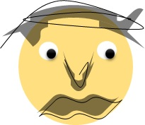

13 августа 2021 г.
Древняя нагвальская считалочка
✦ ❧ ✦
Чудо-юдо рыба Кит. Глаз незрячий все пронзит, Через что от края к краю Рыба море проплывает.
Всех, кто ждал, когда к Проходу Поведет их во главе Проглотил, как воевода Ловкий водный чудо-змей.
Ты не спрашивай Адама, Он не знает этой рыбы. Ева знает, но не скажет, Чтоб с Умом еще пожил ты.
Просто знай, что Рыба эта - Путешествует в Великом Также ловко и проворно Как и ты в своей квартирке
По ковру, встав ранним утром Драпаешь в сторону ванной. Рыба Ключ имеет главный Что Проходы открывает.
Человеческого Мага Хоть в лепешку расшибись Здесь не хватит, чтобы Стражу Убедить их пропустить.
Но лишь только когда вместе СИЛА мы, и с одним Сердцем Нас Орел пропустит мимо, Чтобы сделать нас Живыми.
Музыка под настроение